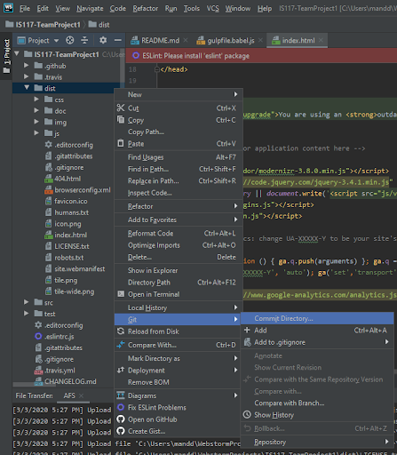
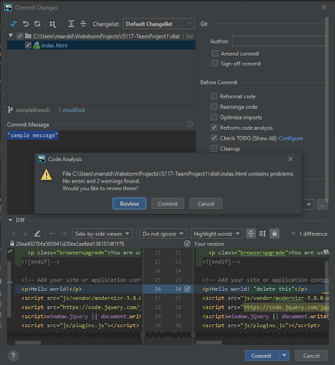
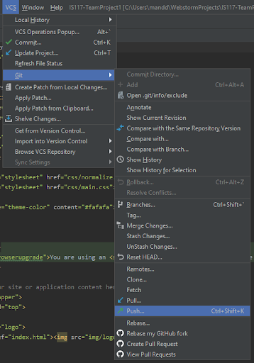
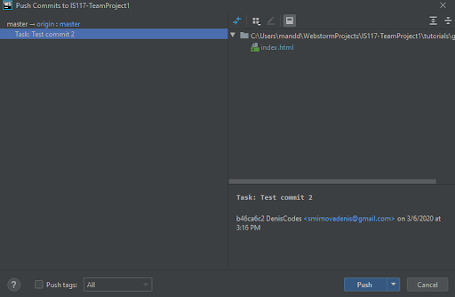
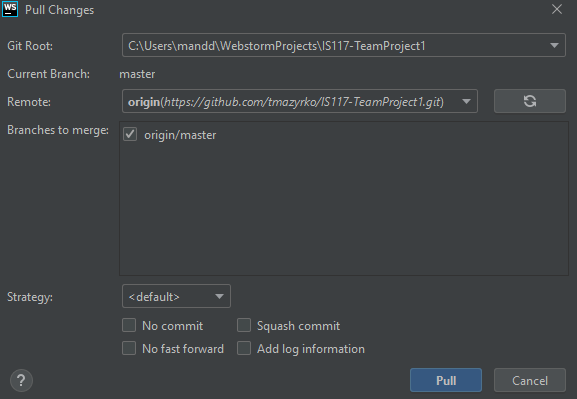

How to make a commit in WebStorm
To make a commit in webstorm simply right-click whatever you would like to commit, select Git and then Commit…
A pop up will appear, click on Commit and then click on Commit again to finalize.
To push a commit to github simply go to VCS then Git finally click Push.
A pop up window will come up select the commit you want to push and click Push.
To pull from github simply go to VCS then Git and finally Pull. A pop up window will appear just click Pull and webstorm will pull the files from github.
